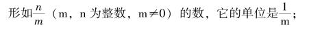
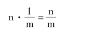
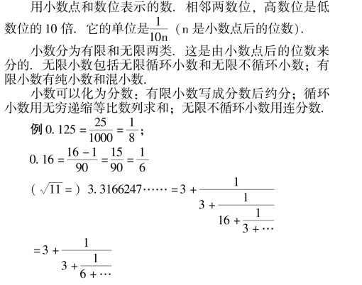
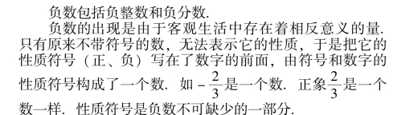
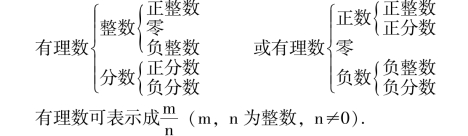
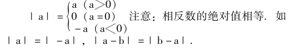
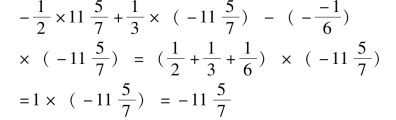
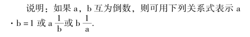
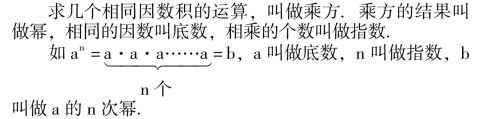
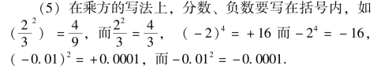

有理数
【自然数】
0，1，2，3，……的数叫做自然数.
它是一个数的集合，它的元素间相邻的差1；最小的自然数是0，没有最大的自然数.自然数的集合是一个半开无限集.
自然数是由数字和数位表示的.
自然数可以分为四类: 0；单位(指1)；质数(也叫素数，是只能被1 和它本身整除的自然数)；合数(除1 和它本身外，还能被其它数整除的数.)
【非负整数】
自然数又称非负整数.
零的概念其中有“无” 的一种.它的出现比正整数要迟.
整数可以分为两类: 奇数(不能被2 整除的整数)，偶数(能被2 整除的整数).奇数的一般表达式是2n －1 (n是0，±1，±2…) 偶数的一般表达式是2n (n 是0，±1，±2…).
【分数】


【小数】

【正数】
带有正号的数叫正数(正号“ ＋”，也可以省略不写).
正数包括正整数和正分数(有限小数和无限循环小数).
【负数】
带有负号的数叫负数(负号为“ －”).

注意: (1) 零是正、负的分界，它既不是正数也不是负数.
(2) 性质符号“ ＋” 表示相同；“ －” 表示相反.＋( －3) 表示与－3 相同的数3；－ ( －5) 表示与－5 相反的数.
(3) 性质符号“ ＋”、“ －” 与运算符号“ ＋” (加)、“ －” (减) 为什么使用相同的符号，是因为用代数和(见后) 可以将其统一起来.
【有理数】
整数和分数统称有理数.数系表如下:

注意: (1) 整数可看成分母是1 的分数.
(2) 有理数是整数和有限小数与循环小数的集合.
(3) 分数化小数，除不尽一定循环.这是因为余数要小于除数是有限的.比如1 ÷7 余数只能小于7.因为余数有限就会重复，因而商也随之重复.1 ÷7 ＝1·42857·，余数分别为3，2，6，4，5，1.
【数轴】
规定了原点，正方向和单位长度的直线叫数轴.
原点所代表的数是零，由原点向箭头所指的方向上的点表示正数，原点与箭头所指的相反方向上的点表示负数.
注意: (1) 数轴的原点位置、单位长度和方向是可任意规定的.只要具备以上三要素(原点、单位和方向) 就是一个数轴.
(2) 用数轴上的点代表数，这样建立了几何(点) 和代数(数) 的一一对应关系.数轴上的点表示所有的实数(见37 页).所以也称数轴为实数轴.任何一个实数都可以在数轴上找到表示它的点，任何一个数轴上的点都表示一个实数.
在实数轴上数的位置有它的顺序性.
【相反数】
只有性质符号不同的数，其中一个是另一个的相反数.
零的相反数是零.“ －0” 是0 的相反数.而“ ＋0”是0 的相同数.
【绝对值】
一个正数的绝对值是它本身；一个负数的绝对值是它的相反数；零的绝对值是零.
绝对值可以看成代表这个数的点到原点的距离.
实数a 的绝对值用｜a ｜表示:

【有理数大小的比较】
正数都大于零，零大于负数，正数大于负数，两个正数绝对值大的数大，两个负数绝对值小的数大.
有理数大小的本质是在数轴上的顺序性.两个数的表示点，右边的点代表的数较大.
【有理数加法的法则】
(1) 同号两个数相加，取原来的符号，把绝对值相加；
(2) 异号两个数相加，取绝对值较大的加数的符号，并用较大的绝对值减去较小的绝对值；互为相反数的两个数相加得零.
(3) 一个数与零相加，仍得这个数.
注意(1) “和” 是加法的结果.它的本质是连续运动的终止位置在数轴上所代表的数.“加” 是连续运动.
(2) 做有理数加法要先决定和的符号，再确定和的绝对值.
(3) 进行有理数加法运算，一般将相反数放在一起，正数、负数分别计算，最后正负数运算.
【加法运算律】
(1) 交换律a ＋b ＝b ＋a，两数相加交换加数的位置，“和” 不变.
(2) 结合律(a ＋b) ＋c ＝a ＋ (b ＋c)，加法可改变运算顺序，结果不变.
说明: (1) a ＋b 和b ＋a 是不同的，因为顺序不同，思维的过程不同.比如4 ＋2 的思维是从4 做为起点，继续“数” 两个数，而2 ＋4 则是从2 开始，往下“数” 四个数.显然4 ＋2 要比2 ＋4 容易.但加法交换律告诉我们交换加数位置，结果相同.这样就可以使思维过程简化.
(2) 加法结合律是改变运算顺序而结果相同，这样就可以使加法运算简化.特别与交换律联合使用就使运算更为简捷.
【有理数减法法则】
减去一个数等于加上这个数的相反数.
减法是加法的逆运算.是已知两数的和与其中一个加数，求另一个加数的运算.
说明: 做减法运算时，首先将减变加，减数变相反数，再按加法去做.
【代数和】
把加减法统一写成加法的式子叫代数和.
代数和可以省略运算符号的加号，如:
( －6) －( ＋4) ＋( －5) －( －1) ＋( ＋3)
＝( －6) ＋( －4) ＋( －5) ＋( ＋1) ＋( ＋3)——减变加
＝－6，－4，－5，＋1，＋3——省略加号
＝－6—4—5 ＋1 ＋3
这个式子应读成－6，－4，－5，＋1 与＋3 的和.也可以读成－6 减4 减5 加1 加3.
∵( －6) －( ＋4) －( ＋5) ＋( ＋1) ＋( ＋3)
＝( －6) ＋( －4) ＋( －5) ＋( ＋1) ＋( ＋3).
注意: 性质符号(正、负) 与运算符号(加、减) 统一起来了.有了代数和以后，加减法统一起来成为代数第一级运算.
【有理数乘法法则】
两数相乘，同号得正，异号得负，并把绝对值相乘；任何数同零相乘，都得零；几个不等于零的有理数相乘，积的符号由负因数的个数决定，当负因数有奇数个时，积为负，当负因数有偶数个时，积为正.
在做乘法运算时，先确定积的符号，再确定积的绝对值.
【乘法运算律】
(1) 交换律ab ＝ba.两数相乘，交换因数的位置，积不变.
(2) 结合律(ab) c ＝a (bc).三个数相乘可改变运算顺序，积不变.
(3) 分配律a (b ＋c) ＝ab ＋ac.一个数同两个数的和相乘等于把这个数分别同这两个数相乘，再把积相加.
说明: (1) 运算定律本质是改变运算的顺序.
(2) 应用运算定律时，要注意逆用.

【有理数除法法则】
两数相除同号得正，异号得负，并把绝对值相除.零除以任何一个不为零的数都得零.
说明: (1) 除法的意义是已知两个因数的积与其中一个因数，求另一个因数的运算，它是乘法的逆运算.
(2) 零不能做除数.这是因为找不到一个数与零相乘得出不为零的数.
如－3÷0 ＝?，而0·? ＝0≠－3.? 不存在
(3) 一个数除以另一个数，等于被除数乘以除数的倒数.这样除法可以转化为乘法.因而乘法与除法可以统一为乘法.故乘法与除法称同一级(第二级) 代数运算.
【倒数】
1 除以一个数的商，叫做这个数的倒数.
注意: 因为零不能做除数，所以零没有倒数.

【乘方】

注意: an做为运算叫做乘方，把它看成运算的结果就叫做幂.
说明: (1) 规定a1＝a.指数为1 时，通常省略不写.
(2) 习惯上把a2(a 的二次方) 叫做a 的平方.a3(a的三次方) 叫做a 的立方.
(3) 正数的任何次幂都是正数；负数的奇次幂为负数，负数的偶次幂为正数.
(4) 乘方运算是第三级代数运算，在没有括号的运算中，乘方运算比乘除运算优先.运算顺序是先高级后低级(先第三级，次第二级，再第一级)。

【近似数】
接近准确而不等于准确数的数叫这个数的近似数，也叫近似值.
近似数与准确数的差叫误差.表示近似数精确程度(精确到什么数位) 叫精确度.
近似数>准确数时叫做过剩近似值，近似数<准确数时叫做不足近似值.
根据精确度决定近似值要将精确度的下一位四舍五入.
例 把3046.1539701 取近似值，精确到百，十，个位及0.001，0.000001.
解精确到百30×102
精确到十305×10
精确到13046
精确到0.0013046.154 精确到0.0000013046.153970.
【有效数字】
一个数从左边第一个不是零的数字起，到最后一位数字止，所有的数字，都叫做这个数的有效数字.
例 0.03050 是一个近似数时，它精确到0.00001，有效数字是四个: 3，0，5，0.
注意: 0.03050 与0.0305 不同，精确度不同，有效数字也不同，前者有四个有效数字后者有三个有效数字.